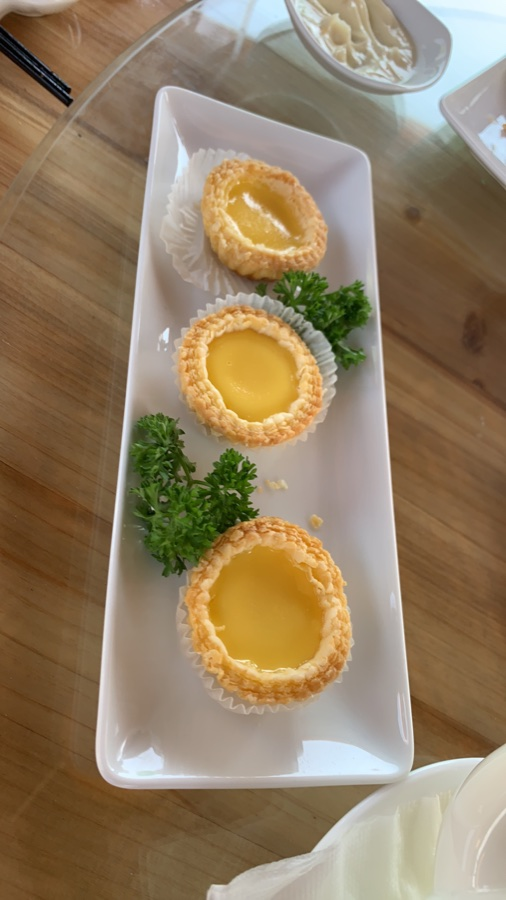

Thực đơn Mỹ Yến
Chọn món
cho cuộc gặp của bạn.
Từ Dim Sum, món dùng chung đến hải sản theo mùa. Xem món trước, sau đó nhắn Mỹ Yến để kiểm tra tình trạng phục vụ và nhận gợi ý cho bàn ăn của bạn.
Xem thực đơn
Hai cách thưởng thức
Một thực đơn cho bữa ăn nhanh, một thực đơn cho bàn ăn trọn vẹn.
Dim Sum, mì & thức uống phù hợp khi bạn muốn chọn món riêng. Thực đơn gọi món dành cho bữa ăn gia đình, nhóm bạn và những dịp muốn cùng chia sẻ. Món hải sản thời giá, món đặt trước và tình trạng phục vụ sẽ được Mỹ Yến xác nhận trực tiếp.
Xem theo nhu cầu của bạn
Thực đơn hiện có.
Thực đơn gọi món gồm các món dùng chung, hải sản theo mùa và món đặt trước. Giá hải sản thời giá sẽ được Mỹ Yến xác nhận trực tiếp.
Hình ảnh chỉ mang tính minh họa. Giá và tình trạng món có thể thay đổi; Mỹ Yến sẽ xác nhận trước khi nhận yêu cầu của bạn.
Hỏi món trực tiếp
Chưa biết chọn món?
Nhắn số người dùng bữa, dịp gặp gỡ và món bạn đang cân nhắc. Mỹ Yến sẽ gợi ý một bàn ăn phù hợp rồi xác nhận giá, tình trạng món và thời gian chuẩn bị.
Phản hồi trong 30–60 phút vào giờ hoạt động.